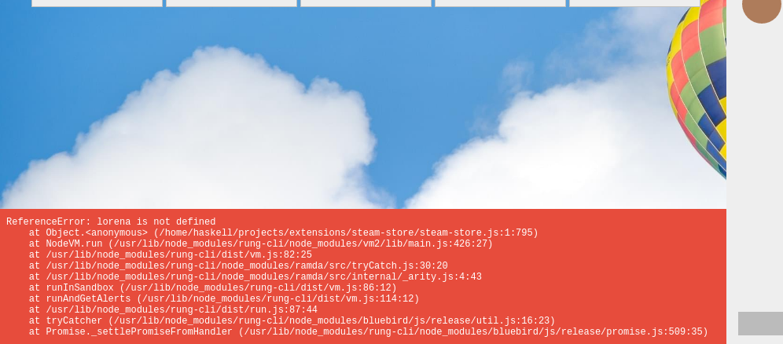

Hot reloading¶
A partir da versão 1.1.1, o Rung CLI suporta desenvolvimento agilizado através de edição ao
vivo e compilação dinâmica. Se você está habituado a desenvolver com React, vai se sentir
familiarizado.

Como configurar¶
Para habilitar o modo live, rode sua extensão com rung run --live, e preencha os valores
dos parâmetros de entrada. Nada mais é necessário. O Rung CLI irá monitorar as mudanças e
compilar dinamicamente!

Linha do tempo¶
Como o estado é puro, uma linha do tempo é criada e você pode navegar pelos estados anteriores. Quando uma mudança é detectada, uma nova era é criada e a aplicação é reposicionada para ela.

Caso você interrompa o processo e entre com novos parâmetros, não é necessário fechar o navegador ou recarregar a página. O mesmo é válido para quando executar outra extensão. As novas entradas serão adicionadas à linha do tempo das anteriores.
Erros¶
Erros sintáticos e de runtime serão exibidos em uma caixa específica.

Barra lateral¶
Você pode clicar nos alertas para ver o resultado da renderização do markdown para comentários na barra lateral.